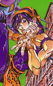
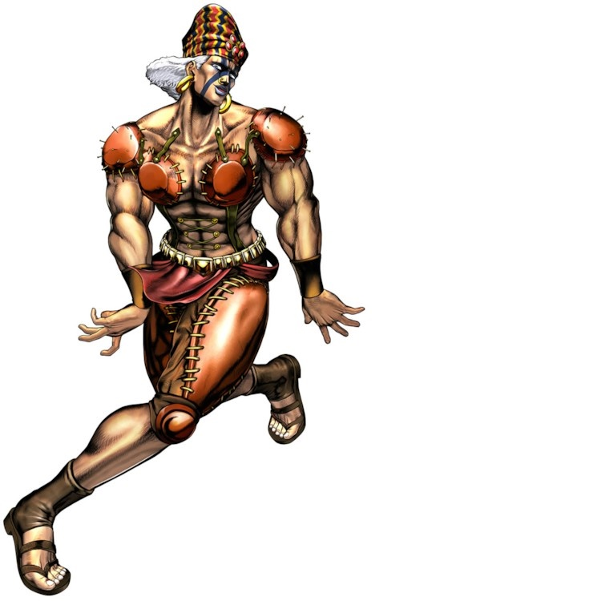
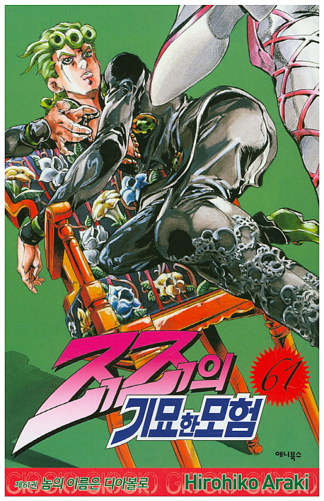
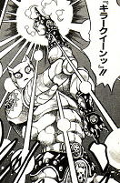
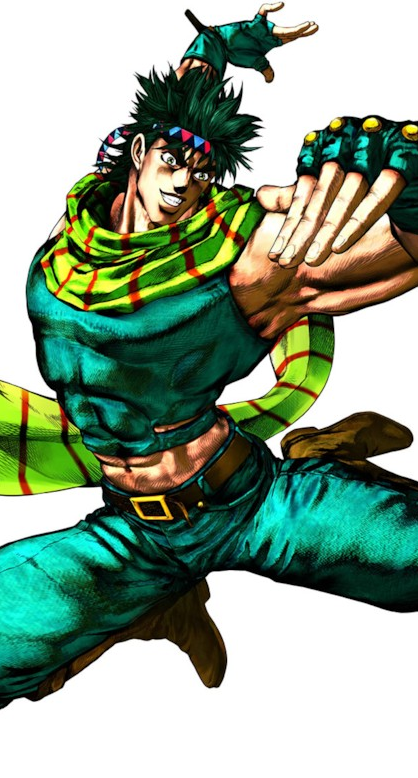
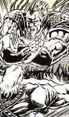
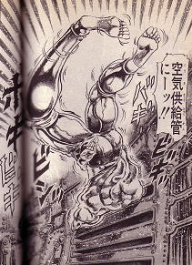

- Level 08 ~
- Level 09 ~
- Level 10 ~
JoJo pose
난이도별 죠죠서기


1. 오른쪽으로 비스듬히 눕는듯
앉는다.
2. 왼손을 가볍게 쥐고 뺨에
갖다댄다.
3. 오른손을 왼팔에 교차시킨다.
4. 왼쪽 허벅지를 땅바닥에
직각으로 세운다.
5. 오른발을 왼쪽 정강이에
올려놓는다.
6. 두 다리 발끝을 앞을 향하여
똑바로 세운다.
close


1. 양 손목을 안쪽으로 꺾고
오른손은 손바닥이 우측을 향하게,
왼손은 뒷쪽을 향하게 한다.
2. 오른손의 검지는 살짝 들어서
마지막마디에서 안쪽으로 꺾어준다.
3. 양 발의 발꿈치를 뗀다.
4. 오른다리는 무릎을 꿇듯
뒷쪽을 향하게 굽히고,
왼다리는 앞쪽으로 뻗어
발뒷꿈치가 우측을 바라보게한다.
5. 얼굴을 왼쪽으로 살짝 비스듬히
돌리고, 상대를 비웃는듯한
표정을 짓는다.
close


1. 오른쪽 무릎을 아슬아슬하게
의자 위에 둔다.
2. 오른쪽 팔꿈치를 등받이에 얹는다.
3. 왼팔을 의자의 난간에 얹는다.
4. 얼굴과 엉덩이를 동시에 올린다.
close


1. 양 손의 손가락을 검지와
새끼손가락만 세운다.
2. 오른팔을 들어올린다.
3. 양 팔꿈치를 가지런히 하고
왼팔을 내린다.
손등은 앞을 향하게 한다.
4. 허리를 뒷쪽으로 꺾으며
몸을 왼쪽으로 살짝 비틀면서
"킬러 퀸!" 이라고 외친다.
close


1. 양팔을 앞뒤로 벌린다.
2. 왼쪽 손목을 오른쪽으로
구부리면서
오른손가락을 손으로부터
멀어지게 구부러트린다.
오른손목도 오른쪽으로 구부린다.
3. 입술을 살짝 깨문다.
4. 양발을 몸의 왼쪽을 향하게 하고,
무릎꿇고 앉은 것 같은 자세로
점프한다.
5. 그대로 공중에서 정지한다.
close


1. "걸렸구나 바보가!"라고 외치며
오른팔을 바깥을향하게하여
양팔로 X 표시를 만든다.
2. "썬더 크로스 스플릿 ..."
이라고 외친다.
3. "어택!" 이라고 외치며
다리를 벌리며 점프한다.
4. 공중에서 정지한다.
close


1. 할 수 없습니다.
2. 진짜 할 수 없습니다.
3. 정 하고싶습니까?
4. 정 하고싶다면
물구나무서기를 하고
온 몸을 뒤틀면 비슷한
느낌을 줄 수 있습니다.
close


죠죠시리즈의 작가.
연재 초부터 늙지 않는듯한 외모로
흡혈귀나 파문전사, 완전생물이라는
별명도 있다.
※ 죠죠시리즈만 1987년부터
현재까지 연재중이며
1960년생으로 2018년 기준 58세다.
close
서동찬의 죠죠서기교실